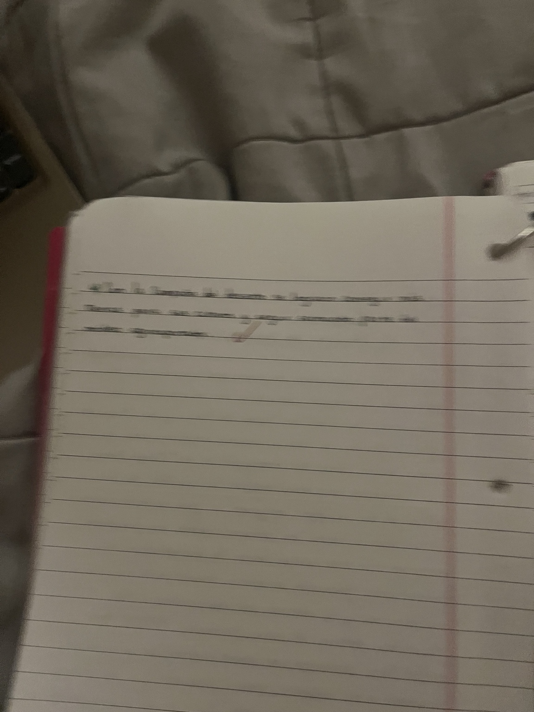

¿Qué es un límite?
Un límite es una línea imaginaria que separa dos Estados. Tiene una función política y administrativa, ya que permite establecer hasta dónde llega el territorio de un Estado y dónde comienza el territorio de otro.
En el territorio, el límite puede reconocerse a través de diferentes elementos y, en algunos casos, puede existir una aduana o un paso fronterizo que controla el ingreso y egreso de personas y bienes.
Límite = línea que separa territorios de distintos Estados.
¿Qué es una frontera?
La frontera es una zona o sector que se encuentra a ambos lados del límite. En estas áreas, muchas veces las diferencias sociales y culturales no son tan marcadas como podría pensarse a partir de la existencia del límite político.
Los habitantes de las zonas fronterizas pueden tener intercambios diarios con las personas que viven del otro lado. Estos intercambios pueden ser comerciales, laborales, familiares, culturales y sociales.
Límite
Es la línea que marca la separación política entre dos Estados.
Frontera
Es la zona cercana al límite donde se producen relaciones e intercambios entre las poblaciones.
¿Por qué son importantes?
Los límites permiten organizar políticamente los territorios y establecer la soberanía de cada Estado. Las fronteras, en cambio, muestran que la separación política no significa que las poblaciones estén completamente aisladas.
En una zona fronteriza pueden existir relaciones cotidianas entre personas de ambos lados, por lo que estas áreas son importantes para estudiar la circulación y los vínculos entre diferentes territorios.
